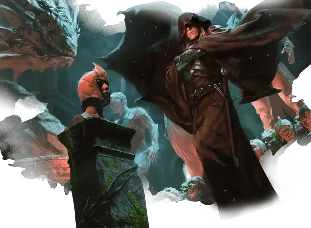

Лазав
Lazav
Средний Монстр (Перевертыш), нейтрально-злой, именной НИП

Класс Доспеха 18 (природный доспех)
Хиты 204 (24к8 + 96)
Скорость 40 футов
| мод | спас | ||
|---|---|---|---|
| СИЛ | 16 | +3 | +3 |
| ЛОВ | 24 | +7 | +13 |
| ТЕЛ | 18 | +4 | +4 |
| мод | спас | ||
|---|---|---|---|
| ИНТ | 22 | +6 | +12 |
| МДР | 20 | +5 | +11 |
| ХАР | 22 | +6 | +12 |
Навыки Восприятие +11, Обман +18, Проницательность +11, Скрытность +19
Сопротивление урону некротическая энергия, психическая энергия
Иммунитет к урону яд
Иммунитет к состояниям испуг, отравление, очарование
Чувства тёмное зрение 120 футов, пассивное Восприятие 21
Языки Общий, Воровской жаргон
Опасность 17 (18000 опыта)
Бонус мастерства +6
Особенности
Неуловимый. Все атаки по Лазава не могут совершаться с преимуществом, пока он дееспособен.
Врожденное колдовство. Базовой характеристикой заклинаний Лазава является Интеллект (Сл спасброска от заклинания 20). Он может накладывать следующие заклинания, не требующие материальных компонентов:
• Неограниченно: обнаружение мыслей [detect thoughts], кодировка мыслей [encode thoughts], свобода перемещения [freedom of movement], злая насмешка [vicious mockery] (4к4 урона психической энергией);
• 3/день каждое: размытый образ [blur], смятение [confusion], отражения [mirror image];
• 1/день каждое: изменение памяти [modify memory], ментальная связь Рэри [rary's telepathic bond].
Легендарное сопротивление (3/день). Если Лазав проваливает спасбросок, он может сделать спасбросок успешным.
Психическая защита. Пока Лазав дееспособен, он невосприимчив к магии, которая позволяет другим существам читать его мысли, определять, лжет ли он, знать его мировоззрение или знать его тип существа. Существа могут телепатически общаться с Лазавом, только если он это позволит.
Савант перевёртыш. Лазав может использовать бонусное действие, чтобы превратиться в Гуманоида Маленького или Среднего размера, которого он видел. Его характеристики, кроме размера, одинаковы в каждой форме. Любое снаряжение, которое он носит или несет, не трансформируется.
ЧЕРТЫ Лазава.
Идеал:. «Знание. Знать вещь - значит иметь над ней власть».
Привязанность. : «Когда придёт время и мои планы осуществятся, вся Равника будет моей».
Слабость:. «Я никому не могу доверять».
Действия
Мультиатака. Лазав совершает три атаки Коротким мечом.
Короткий меч. . Рукопашная атака оружием: +13 к попаданию, досягаемость 5 фт., одна цель. Попадание: 10 (1к6 + 7) колющего урона плюс 10 (3к6) урона психической энергией, и её следующий бросок атаки, совершаемый до начала следующего хода Лазава, совершается с помехой.
Легендарные действия
Лазав может совершить 3 легендарных действия, выбирая из представленных ниже вариантов. За один раз можно использовать только одно легендарное действие, и только в конце хода другого существа. Лазав восстанавливает использованные легендарные действия в начале своего хода.
Атака. Лазав совершает атаку оружием.
Накладывание заклинания (стоит 2 действия). Лазав накладывает одно из своих Врожденных заклинаний.
Переменчивый кошмар (стоит 3 действия). Лазав стремительно принимает облик нескольких кошмарных существ, набрасывающихся на всех поблизости. Каждое существо в пределах 10 футов от Лазава должно преуспеть в спасброске Ловкости Сл 21, иначе получит 18 (4к8) урона типа, выбранного Лазавом: кислотой, холодом, огнём, электричеством или некротической энергией.
Описание
Лазав обладает уникальной квалификацией для должности главы гильдии Димиров: он оборотень, о таинственном гении которого сообщают агенты из всей сети Димиров. Он принимает самые разные обличья, как того требуют его потребности и планы. Он мог выйти на улицы Равники как пожилая вдова, чтобы подслушивать на базаре, стать ведалкеном-гусаром Сената Азориусов, чтобы обойти контрольно-пропускной пункт, или превратиться в торговца с Жестяной улицы, чтобы обмануть проходящего дворянина. Его истинная форма может быть формой двойника или какого-либо другого существа; никто никогда не видел его настоящего обличия.